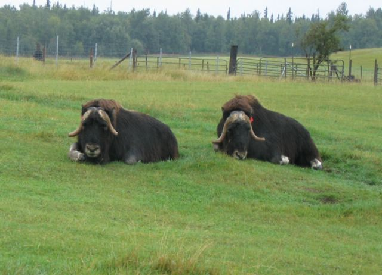

First |
Previous Picture |
Next Picture |
Last |
------------------------------ |
PICTURES HOME |
BORIS HOME

Estos animales se usan para conservar la tradicion de los indios de Alaska que usan el pelo llamado Qiviut para tejer sueteres y sombreros muy calurosos.
picture_042.jpgtest